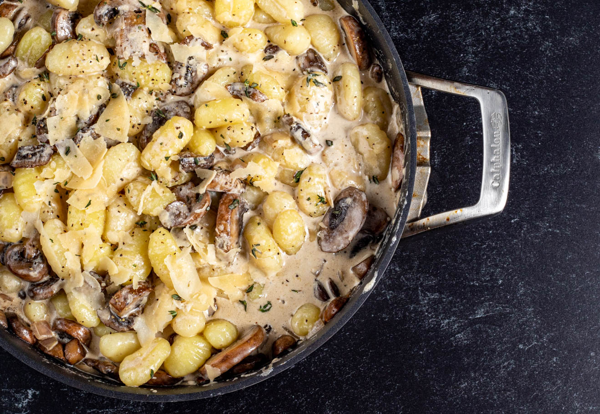

Black Truffle Mushroom Gnocchi

Description:
A rich, creamy, earthy pasta dish, characterized by its tangy parmesan, toothful gnocchi, and with just the right amount of black truffle to accentuate the mushroom.
Ingredients:
- 24 oz gnocchi
- 3 tbsp black truffle butter
- 1 shallot, diced
- 16 oz mushroom, sliced
- 1 cup heavy cream
- 1 cup parmesan, shredded
- salt and pepper, to taste
- fresh thyme, to garnish
- red pepper flakes, to garnish
Steps:
- Prepare gnocchi according to package directions.
- Meanwhile, melt Black Truffle Butter in a large skillet or sauce pan over medium heat. Add shallots and mushrooms, and cook for 4-5 minutes.
- Add cream and Parmesan cheese. Cook, stirring frequently, 2-3 minutes, until slightly thickened.
- Put cooked gnocchi into the sauce and stir to combine.
- Salt and pepper, to taste, and add fresh thyme and red pepper flakes, if desired.
- Serve.